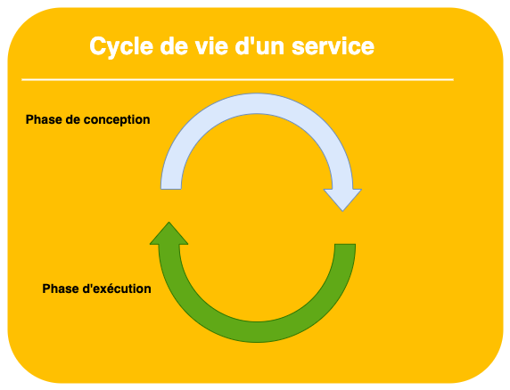
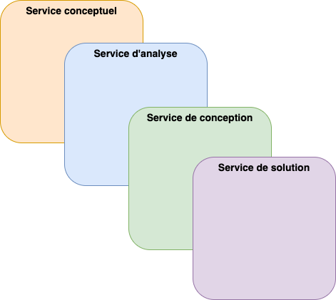
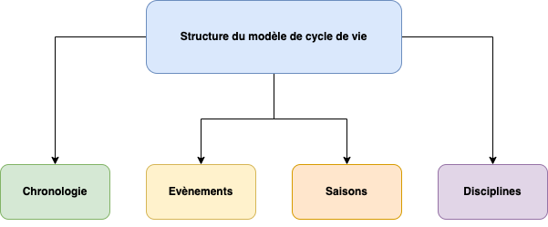
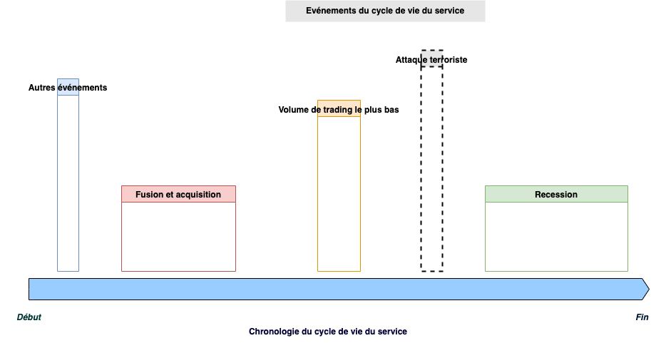
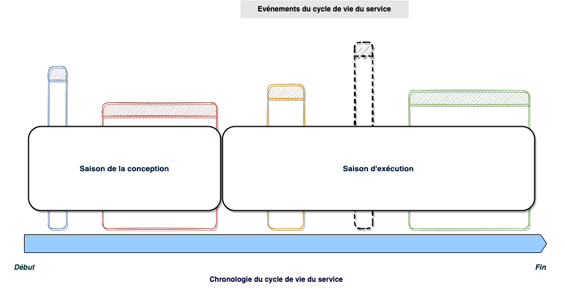
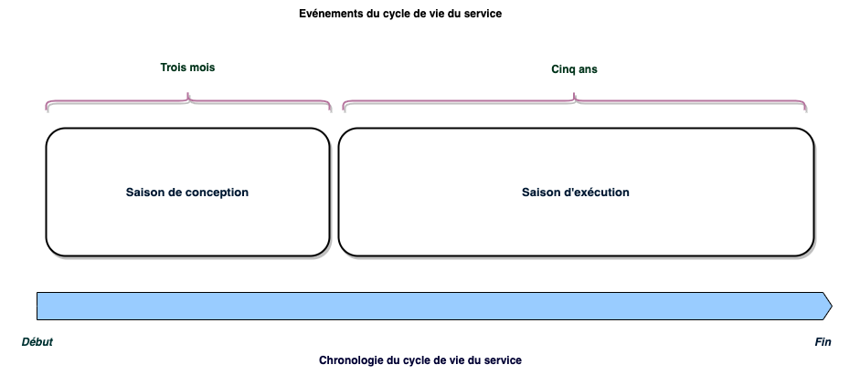
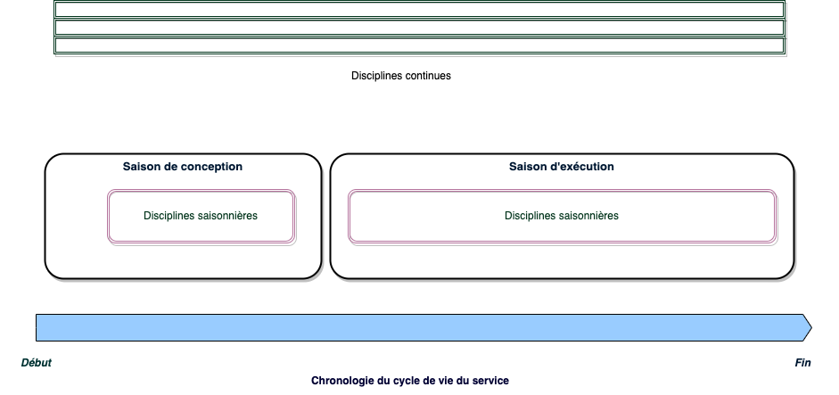
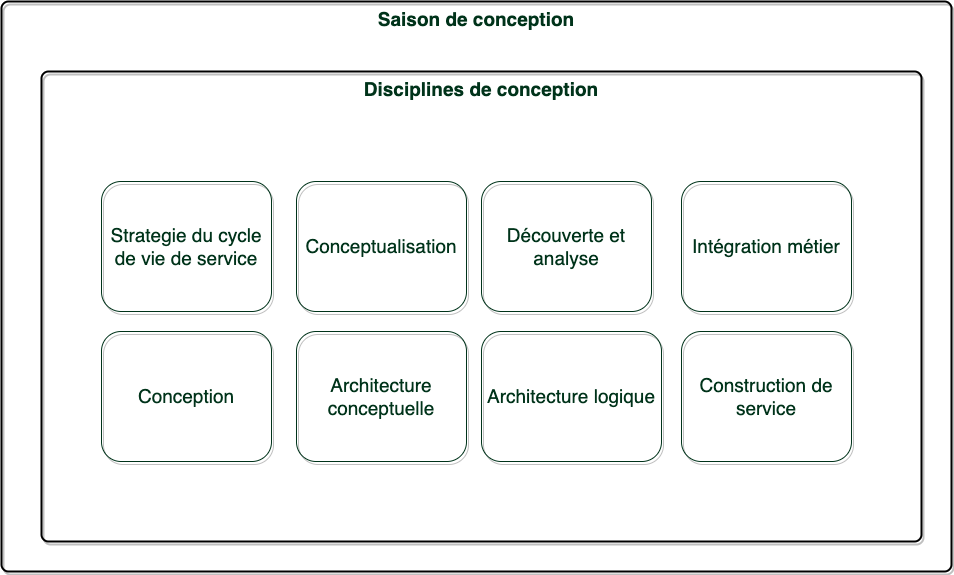
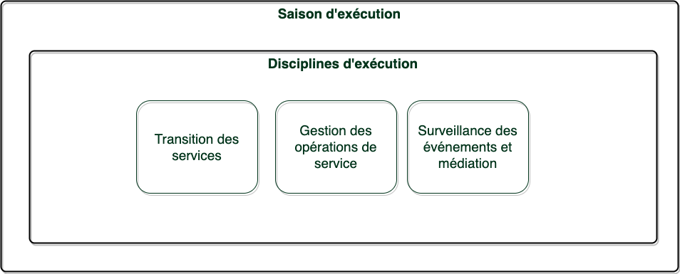

Chapter 2 Modèle de cycle de vie
Ce chapitre va aborder le cycle de développement et le cycle de vie des applications orienté service.
Un service est quelque chose qui nait à un certain moment pour accomplir une tache précise qui peut s’achever ou pas. Un service est une entité qui vit pour une certaine raison, peut durer un certain temps et peut ou non être retiré en raison des circonstances.
Un service est une matérialisation de solution logicielle qui est créée dans le but de résoudre un problème commercial ou technologique, mais qui est également un élément de mise en œuvre qui doit coexister avec d’autres actifs logiciels.
Dans la suite du document, nous allons faire ressortir les préoccupations organisationelles des entreprises, façonnées par la discipline de modélisation de la SOA et allons terminer par l’implémentation de la solution informatisée.
Il n’y a rien de cyclique dans le cycle de vie des services, et même si nous le souhaitons, les services ne durent pas éternellement. Alors que les services continuent d’évoluer et d’apporter de la valeur à leurs consommateurs et contribuent de manière significative dans les environnement de production au sein des entrerprises, ils sont toujours sujets à la perfection et aux amélioration. Cela nécessite généralement une investigation pour déterminer si un service doit être ramener à la forge de conception pour une refaire l’architecture ou initier une reconstruction. Ce processus répétitif est appelé le cycle de vie du service. La figure ci-dessous illustre le cycle de vie d’un service :

2.1 Principe du modèle de cycle de vie orienté service
Les principes du cycle de vie d’un service sont les bonnes pratiques rudimentaires pour instituer une méthodologie du cycle de vie d’une SOA afin de gérer les initiatives métiers d’une organisation et le processus de développement d’un service. Ils abordent les fondamentaux de la gestion des frameworks, la planification, les préoccupations structurelles en rapport avec les sujets suivants : la métamorphose du service, la stratégie, la gouvernance, la structure, le financement, le retour sur investissement (ROI).
Le modèle du cycle de vie de la SOA est basé sur le principe de la stratégie qui a un impact sur tous les aspects du cycle de vie du service, telles que la planification d’initiatives de cycle de vie et la fourniture d’une feuille de route détaillée. Le principe de la gouvernance se focalise sur les bonnes pratiques de l’orienté service et les standards pour faciliter la gestion et l’exécution du cycle de vie pour superviser les activités. le principe de structure développe les éléments du cadre du cycle de vie. Le système de financement du projet est un autre important principe qui introduit un nouveau regard sur le développement des services et la budgétisation des opérations. Le principe du retour sur investissement met l’accent sur l’importance du suivi des revenus générés par les opérations de service. Enfin, le principe de métamorphose, qui incarne la stratégie de cycle de vie orientée service, décrit l’évolution du service au cours de sa durée de vie.

La métamorphose
Le paradigme de la métamorphose de l’orienté-service est décrit comme l’aspect le plus important de la modélisation orienté-service. Le cycle de vie orienté service est centré sur la perspective de développement et d’exploitation d’un service et sur son passage dans le temps au cours de sa durée de vie. Ici, la principale préoccupation est le traitement d’un service lors des événements du cycle de vie. Cela concerne les mécanismes qui ont été commandés pour utiliser une exécution sans faille du service et pour assurer la continuité des activités dans l’environnement de production. La figure ci-dessous illustre les quatre principaux états de transformation du cycle de vie orienté service:

Au départ un service apparaît simplement comme une idée et un concept. Plus tard,il devient une unité d’analyse. Lorsque la phase d’analyse est terminée, le service se transforme en une entité de conception. Enfin, le cycle de vie de développement orienté service génère un service de solution physique prêt à être déployé dans des environnements de production.
La stratégie
La stratégie du cycle de vie des services est la force motrice de toute activité de projet orientée service. Tous ceux qui veulent s’engager sur une telle initiative doivent avoir en main une stratégie de cycle de vie des services.
Généralement, une stratégie de cycle de vie est le plan à long terme pour le cycle de vie du service. C’est le moyen de planifier des événements, de planifier des étapes et de créer des calendriers pour des initiatives axées sur les services. Ce plan identifie les périodes pendant lesquelles les services sont exposés, sont construits, survivent en production et même se retirent. Ainsi, une stratégie ne doit pas proposer de solutions tactiques ou à petite échelle ; il doit fournir un programme d’évolution de service durable qui peut supporter des événements indésirables et assurer la continuité des activités. La stratégie devrait apporter les aspects suivants à l’initiative du cycle de vie axé sur les services:
- des approches proactives pour faire face aux événements imprévus et garantir la stabilité de l’entreprise
- des feuilles de route stratégiques et complètes qui offrent des alternatives et encouragent l’agilité de l’entreprise
- des jalons et des objectifs atteignables, mesurables et réalistes qui peuvent être atteints dans les limites des budgets alloués et accomplis à temps.
La gouvernance
Le cycle de vie du développement orienté services doit être supervisé par une organisation de gouvernance qui est à la fois engagée dans la supervision et qui conçoit également une méthodologie de développement qui offre des disciplines, des meilleures pratiques, des normes et des politiques d’architecture orientée services (SOA). De plus, l’établissement d’une entité de gouvernance centrale est une condition préalable au succès du cycle de vie des services. Cette organisation doit être dirigée par des praticiens SOA qui comprennent clairement les processus qui aident les services à prospérer et qui offrent une direction commerciale et technologique.
La structure
Le cycle de vie du service doit avoir une structure flexible qui peut permettre une gestion efficace du service. La structure du cycle de vie désigne le cadre dans lequel les services sont construits, qualifiés et exploités dans des environnements de production. Les disciplines sont les piliers de la structure du cycle de vie des services. Ils s’apparentent à des manuels d’instructions qui guident les praticiens SOA et les conseillent sur le développement et l’exploitation des services. Par exemple, une discipline du cycle de vie peut être la découverte et l’analyse des services, qui recommandent un ensemble d’activités pour l’identification des services. Un autre exemple est la discipline de construction de services qui indique aux développeurs comment créer des services efficaces.
Le financement
Les systèmes de financement organisationnels traditionnels allouent des budgets aux projets. Les chefs de projet priorisent les décaissements de ces investissements. Un cycle de vie réussi nécessiterait une approche différente pour soutenir les systèmes de développement et de production orientés services. Une approche de financement plus efficace serait de parrainer les cycles de vie des services, plutôt que d’investir dans des opérations à plus grande échelle. L’allocation de fonds à des initiatives individuelles de développement axées sur les services augmenterait la transparence financière et encouragerait le développement d’actifs logiciels réutilisables et la consolidation de fonctionnalités commerciales redondantes. De plus, une fois que les performances et les taux de réutilisation des services au cours de leur cycle de vie pourront être mesurés, il sera possible d’évaluer davantage leur valeur et d’ajuster adéquatement leurs budgets de soutien. Il est conseillé d’adopter une méthode de financement flexible qui peut être ajustée au cours du cycle de vie du développement des services plutôt que de soutenir un système fiscal rigide.
Retour sur investissement
Rien n’est plus important pour une entreprise que le retour sur investissement. Le financement du cycle de vie des services doit justifier les budgets alloués et les ressources utilisées par les services. Par conséquent, le retour sur investissement doit être évalué en permanence pendant le cycle de vie orienté service pour garantir une allocation appropriée des fonds et l’utilisation des ressources. Ce processus d’évaluation peut produire de meilleurs résultats d’analyse du retour sur investissement pendant la production, moment auquel les services exécutent des transactions commerciales et automatisent les processus commerciaux. Cependant, pendant le développement, lorsque les services sont implémentés, les évaluations du retour sur investissement ne sont pas trop utiles.
2.2 Structure du modèle de cycle de vie orienté service
Le modèle de cycle de vie des services identifie les blocs nécessaires pour la mise en oeuvre du patron du cycle de vie.
Que sont ces composants ? Comment peuvent-ils aider à la gestion de la durée du cycle de vie ? Comment l’organisation peut-elle s’adapter à la métamorphose des services ?
Ces questions fondamentales sont intrinsèques à tout projet de développement orienté service et doivent être résolues avant le début du cycle de vie du service. Le schéma ci-dessous propose les quatre composants essentiels du cycle de vie des services.

Les éléments de la structure du modèle de cycle de vie sont catégorisés en deux(2) groupes distincts de gestion : l’écheancier et les composants des meilleures pratiques (best-practices). En premier lieu, l’écheance,les évènements et les saisons sont des aspects du cycle de vie du service qui sont conçus pour faciliter la planification du calendrier du projet orienté service. Ces éléments de structure du cycle de vie doivent être utilisés pour diviser la période de temps globale conçues pour les activités de développement et de gestion des services en unités gérables. En outre, ces efforts de planification doivent être accompagnés de calendriers de points de contrôle des processus, dans lesquels les jalons, les objectifs et les livrables sont évalués et qualifiés.
En second lieu, la composante disciplines du cycle de vie identifie les aspects “que faut-il faire” du projet. Ils offrents les bonnes pratiques de modélisation à suivre tout au long du cycle de vie du service.
Chronologie du cycle de vie de service
La chronologie des services définit la durée de vie des services. Toutes les activités de développement de service et les événements chronologiques de la durée de vie doivent être définis entre le début et la fin de la chronologie.
Le point de départ est la date de lancement du projet de développement, en général la phase de lancement, et la fin marque la disparition des services et leurs offres. Les services, cependant, ne devraient pas être les seules entités concernées au cours des initiatives de cycle de vie. Les organisations intègrent généralement des activités de développement des consommateurs au cours de la chronologie du cycle de vie du service, car ces processus s’entremêlent fréquemment au cours de la feuille de route du cycle de vie.
Pourquoi les délais de cycle de vie sont-ils si importants pour les projets et opérations orientés services? Est-il possible de gouverner, de budgétiser, d’évaluer et d’exploiter des services sans calendrier précis? La réponse est évidemment non.” L’élaboration d’une feuille de route du cycle de vie implique la participation de nombreux ensembles de compétences organisationnelles et de stratégies de planification et nécessite la définition de jalons et d’objectifs de projet. Ces activités doivent avoir lieu, s’interfacer et coexister dans un calendrier de cycle de vie de service prédéfini. Les tâches de planification de la feuille de route peuvent être simples et rapides si l’organisation a déjà adopté une pratique de centre d’excellence (CoE) SOA, un groupe de gouvernance SOA ou des autorités de gestion de portefeuille SOA. L’expérience qu’ils ont acquise au cours de multiples projets orientés services et opérations de service peut alors être mise à profit.
Les organisations qui n’ont pas atteint des niveaux de maturité SOA élevés peuvent continuer à s’appuyer sur des pratiques de gestion de projet conventionnelles et bénéficier des disciplines traditionnelles de gestion de programme.
Rien d’autre ne peut influencer davantage le calendrier du cycle de vie du développement d’un service que les systèmes de budgétisation organisationnelle et d’allocation des fonds. Ces processus de budgétisation favorisent-ils habituellement les grands projets plutôt que les initiatives à petite échelle ? Ces dogmes d’allocation de fonds sont-ils fondés sur le service ? Le financement basé sur les services consiste à allouer des budgets directement aux projets du cycle de vie des services. Ainsi, les délais du cycle de vie des services peuvent être raccourcis ou perturbés si le système de budgétisation d’une organisation n’est pas suffisamment axé sur les stratégies SOA et sur le développement, la maintenance et les opérations orientés services.
Evènements du cycle de vie de service
Les événements du cycle de vie des services sont comme les autres événements de la vie des gens. Ils ont des débuts, durent un certain temps et parfois disparaissent. Les événements ont des modèles : ils commencent à un moment particulier et se terminent à un autre. Ils peuvent dépasser la durée de vie d’un service, durer peu de temps, se succéder ou se chevaucher.
Pourquoi les événements sont-ils si importants pour la gestion du cycle de vie ? Comment gérer efficacement les événements ?
Il existe deux principaux types d’évènements: ceux qu’il est possible de prévoir et de programmer et les évènements inattendus qui doivent provisoiremennt être pris en compte. Ainsi, la stratégie de cycle de vie des services doit catégoriser les événements en fonction de leur prévisibilité.Cela peut faciliter une stratégie proactive qui non seulement s’attaque aux événements planifiés, mais élimine également les mauvaises surprises qui peuvent affecter la stabilité de l’entreprise.
Le schéma ci-dessous illustre les quatre événements majeurs qu’une stratégie de cycle de vie doit prendre en charge :
- les événements organisés(programmés)
- les événements métiers et technologiques imprévisibles
- les événements aléatoires
- les événements conditionnels

Evénements programmés : La méthodologie traditionnelle du cycle de vie du développement des systèmes est basée sur des projets qui sont pilotés par des événements prédéterminés, souvent appelés étapes.Les équipes de développement impliquées connaissent précisément la durée de chaque étape et connaissent les livrables requis correspondants. Ces étapes servent principalement de points de contrôle des livrables, au cours desquels des activités d’évaluation telles que la notation de la qualité du projet et le classement du personnel ont lieu. Par exemple, l’étape de planification, l’étape de conception, l’étape de l’implémentation, l’étape de déploiement et l’étape de support produit sont les étapes les plus courantes dans les méthodologies de cycle de vie des systèmes d’aujourd’hui. Traditionnellement, les horaires des étapes sont gravés dans le marbre, quels que soient les événements inattendus du marché ou le type de produit développé ou maintenu. Les exigences fonctionnelles, les exigences non fonctionnelles et les documents de spécifications techniques sont normalement livrés et inspectés à la fin de l’étape de planification pour déterminer si l’étape de conception peut commencer.
Evénements métiers et technologiques imprévisibles : Comment le cycle de vie des services peut-il être structuré et planifié pour faire face aux événements métiers et technologiques imprévisibles ? De telles circonstances peuvent-elles nuire à l’exécution des activités et affecter la productivité et la rentabilité de l’entreprise ? Absolument. Par conséquent, il est prudent d’inclure divers scénarios métiers et technologiques dans le cycle de vie du service pour faire face à ces incidents imprévisibles. La volatilité des marchés boursiers, par exemple, peut stimuler le chômage et affecter les taux d’intérêt. Par conséquent, ces événements peuvent réduire la demande des investisseurs pour les actions et accroître l’intérêt pour les placements à revenu fixe. Un cycle de vie axé sur les services et adapté à ces scénarios de marché instables peut offrir de meilleures stratégies pour répondre à l’agilité commerciale et à la flexibilité technologique. Dans ce cas, une solution serait de renforcer le soutien aux services à revenu fixe pour répondre à sa demande de consommation croissante. « Support » signifie augmentation du financement ou renforcement des capacités techniques du service, telles que l’évolutivité et la haute disponibilité.
Une attention particulière doit être accordée aux événements métiers et technologiques imprévisibles lors de l’élaboration d’une stratégie de cycle de vie axée sur les services. Comment est-il possible d’établir un cycle de vie de service piloté par des événements difficilement prévisibles ? Les événements commerciaux sont-ils vraiment difficiles à prévoir ? Les réponses à ces questions dépendent de la capacité de l’organisation à effectuer une analyse des risques et à fournir des stratégies appropriées pour faire face à l’imprévisibilité et à l’incertitude du marché. Ces pratiques de gestion des risques devraient faciliter une exécution commerciale sans faille et éviter les fluctuations du commerce. Il existe de nombreuses approches industrielles bien connues pour l’atténuation des risques et la prévisibilité du marché, telles que la gestion stratégique des risques1 (SRM), la planification de la continuité des activités et les techniques d’analyse des ratios pour prédire l’impact financier futur sur les entreprises en fonction de leurs performances passées.
En 1992, Kent Miller a suggéré quatre moyens majeurs de combattre l’imprévisibilité des affaires dans un article du Journal of International Business Studies. Toutes ces mesures devraient faire partie d’une stratégie commerciale puissante qui peut atténuer les risques et devrait donc fournir des orientations pour la stratégie de cycle de vie orientée services:
- Éviter l’imprévisibilité : Il s’agit d’éviter les événements qui pourraient nuire à l’entreprise.
- Adopter une approche proactive : Cela signifie adopter une approche stratégique proactive plutôt que de réagir aux événements du marché.
- Alliance : Il s’agit d’établir des alliances par le biais d’accords multilatéraux avec des partenaires commerciaux tels que des fournisseurs, des vendeurs et des coentreprises et en acquérant des licences technologiques.
- Agilité : Cela nécessite une agilité commerciale accrue pour permettre une réponse rapide aux tendances du marché.
Cette approche de planification préconise d’abord de mener des études commerciales qui peuvent produire des prédictions d’événements commerciaux. Par la suite, les conseils de Miller doivent être utilisés pour éviter les événements imprévisibles dans la stratégie du cycle de vie. La conception, l’implémentation et l’architecture du service doivent prendre en compte les fonctionnalités de modification du comportement afin de réduire l’exécution instable du service en production. Par exemple, si une récession est prédite par des indicateurs de marché, elle doit être établie comme un événement du cycle de vie du service dans la feuille de route de la stratégie. De cette façon, les bons services peuvent être choisis et investis pour l’avenir de l’organisation et une meilleure gestion du portefeuille de services. Si l’entreprise est dans l’institution commerciale, il peut être conseillé de renforcer les capacités de négociation des matières premières et des obligations et de détourner le financement des investissements à haut risque pendant les périodes de récession.
Evénements aléatoires : Les événements aléatoires sont des événements qui peuvent être causés par des accidents du travail, des troubles politiques et des catastrophes naturelles telles que des tremblements de terre et des inondations majeures qui peuvent affecter l’économie globale et perturber le commerce. Les cycles de vie des services doivent fournir des espaces réservés pour ces circonstances aléatoires, en particulier pour les organisations qui exercent leurs activités dans des environnements à haut risque tels que les institutions de production pétrolière, les sociétés pharmaceutiques ou les sous-traitants de la défense. De plus, les compagnies d’assurance et les établissements bancaires de prêt peuvent également être touchés par ces événements aléatoires, car ils peuvent être tenus d’honorer les réclamations d’assurance ou de fournir des fonds pour aider les entreprises touchées.
Une stratégie de cycle de vie devrait être basée sur des études d’évaluation des risques que l’organisation peut avoir déjà entreprises ou être en train d’effectuer. Quel type d’informations les différents modèles d’évaluation des risques standard de l’industrie fournissent-ils ? Ces modèles offrent des outils d’analyse et de gestion de crise qui peuvent aider à atténuer le risque associé à des événements aléatoires. Parmi ceux-ci figurent des modèles d’événements météorologiques extrêmes, des modèles de marée qui peuvent prédire les modèles d’inondation et des modèles d’analyse des tremblements de terre.
Evénements conditionnels : Les événements conditionnels sont différents. On les appelle circonstances conditionnelles parce qu’elles peuvent ou non se produire. Il s’agit d’incidents qui ne peuvent se produire que si certains critères de référence du cycle de vie des services ont été respectés ou si les accords de niveau de service (SLA) entre les consommateurs et les services ont été violés. Par conséquent, les événements conditionnels doivent être pris en compte dans la stratégie de cycle de vie du service afin de fournir une meilleure couverture de la solution pour la feuille de route du cycle de vie. Par exemple, les volumes de transactions commerciales peuvent dépasser la capacité d’un service de négociation lorsqu’un grand nombre d’investisseurs exercent leurs options sur actions avant l’expiration du contrat. Un tel événement conditionnel doit stimuler diverses activités du cycle de vie du service qui peuvent atténuer l’augmentation inattendue du volume des transactions.
Les événements conditionnels peuvent également être des jalons et des objectifs provisoires, des opérations tactiques ou des événements de calendrier qui doivent être poursuivis si le modèle commercial et les stratégies d’une organisation sont sur le point de changer. Par exemple, le cycle de vie d’un service peut être considérablement influencé si un modèle commercial abandonne son concept de profil client au profit de l’idée de foyer client. Les services qui fournissent un contenu de profil client peuvent rapidement devenir inutiles à moins que des améliorations de la fonctionnalité du service ne soient appliquées.
Contrairement aux circonstances commerciales aléatoires et imprévisibles, les événements conditionnels peuvent fournir des chemins alternatifs pour le processus de cycle de vie du service. La feuille de route planifiée doit tenir compte des événements qui peuvent ou non se produire au cours d’une durée de vie utile. Ceci est analogue aux jonctions de décision dans un diagramme de flux - similaire à la logique de programmation “si, que, sinon”.

Les saisons du cycle de vie de service
Les saisons du cycle de vie sont analogues aux saisons de la terre. Ce sont des périodes pendant lesquelles les services se transforment d’idées et de concepts en entités physiques qui sont déployées dans des environnements de production. Les services traversent deux grandes saisons de cycle de vie : la saison de la conception et la saison d’exécution. Les services sont établis au cours de la saison de conception, au cours de laquelle ils sont conceptualisés, analysés, conçus, construits et testés. Ces activités de développement de services génèrent des services de solutions physiques qui peuvent ensuite être déployés avec succès et transférés vers des environnements d’exécution. Pendant la saison d’exécution, à savoir l’environnement de production, les services sont gérés, surveillés et contrôlés pour garantir des performances et des taux de consommation appropriés.

Les services doivent passer la majeure partie de leur cycle de vie dans la saison d’exécution et moins dans la saison de conception. Par conséquent, presque tous les événements du cycle de vie des services (discutés dans la section sur les événements du cycle de vie des services) se produisent pendant la saison d’exécution, au cours de laquelle les services sont testés sur le terrain et sont mis à l’épreuve par leurs environnements, leurs services homologues et leurs consommateurs, et fournir une valeur commerciale.
Le schéma ci-dessous illustre un exemple de programmation des saisons d’un cycle de vie de service : trois mois pour la saison de conception et cinq ans pour la saison d’exécution

Enfin, les services peuvent-ils vivre simultanément sur ces deux saisons du cycle de vie ? Autrement dit, peuvent-ils être réorganisés, repensés et reconstruits tout en continuant à fonctionner en production ? Ce scénario est vivement recommandé, car les services doivent continuer à assurer la continuité et la stabilité des activités tout en subissant des améliorations au cours de la saison de conception.
Les disciplines du cycle de vie de service
Les disciplines du cycle de vie orientées services sont les bonnes pratiques et normes qui facilitent la conception, l’architecture, l’implémentation, les opérations en production et les initiatives de gestion des services tout au long de la durée du cycle de vie orienté services. Ils sont généralement élaborés par l’organisme SOA CoE (Center of Excellence), une organisation agréée pour développer, recommander et appliquer des normes et des politiques SOA dans toute l’entreprise. Notez que ces principes directeurs de développement de services de cycle de vie incluent non seulement des disciplines de modélisation orientées services ; ils offrent également les meilleures pratiques relatives à la gestion physique et aux opérations des services dans l’environnement de production.
Il existe deux grandes catégories de disciplines du cycle de vie des services qui doivent être pratiquées lors de projets orientés services : les disciplines continues et les disciplines saisonnières. Les disciplines de conception et d’exécution sont saisonnières. Elles sont souvent appelées disciplines saisonnières car elles sont en corrélation avec les saisons du cycle de vie au moment de la conception et de l’exécution. Ainsi, les activités de la discipline de conception doivent être effectuées pendant la saison de conception. En conséquence, le processus de discipline d’exécution doit être suivi tout au long de la saison d’exécution. À l’inverse, les activités de discipline continue du cycle de vie des services sont pérennes. Ils doivent être pratiqués en permanence pendant le cycle de vie du service et poursuivis parallèlement aux disciplines du cycle de vie de la conception et de l’exécution.

Disciplines de conception du cycle de vie des services
Les disciplines de conception du cycle de vie axées sur les services consistent à créer des services et à les préparer pour la production. Ils consistent en des activités recommandées qui devraient être poursuivies au début d’un projet par la construction physique de services. Ce processus commence par la planification du cycle de vie des services dans laquelle une stratégie de cycle de vie est élaborée ; continue avec la découverte et l’analyse des services, la conception, l’architecture ; et se termine par la construction physique des services. Le schéma suivant dépeint les huit(8) disciplines de conception : la stratégie de cycle de vie orientée services, la conceptualisation orientée services, découverte et analyse orientées services, intégration métier orientée services, conception orientée services, architecture conceptuelle, architecture logique et construction de services.

Discipline de stratégie de cycle de vie axée sur les services : La discipline de la stratégie du cycle de vie des services offre des conseils qui facilitent l’établissement d’une feuille de route du cycle de vie qui décrit les implémentations détaillées pour les saisons de cycle de vie orientées service de conception et d’exécution. Pour élaborer une stratégie efficace de cycle de vie axée sur les services, les principaux ingrédients stratégiques suivants doivent être pris en compte :
- allouer des budgets aux activités de développement du cycle de vie des services et aux opérations de production
- dimensionnement des saisons de conception et d’exécution
- concevoir des calendriers d’emploi des disciplines de conception et d’exécution au cours de la chronologie du cycle de vie du service
- planifier l’application de disciplines continues au cours d’une période de cycle de vie de service
Discipline de conceptualisation orientée service : Cette discipline de modélisation offre les meilleures pratiques qui peuvent aider à transformer les problèmes et préoccupations organisationnels en idées commerciales et en concepts de services d’entreprise structurés et formalisés.
Discipline de découverte et d’analyse orientée service : Cette discipline propose diverses approches de modélisation pour découvrir et profiler les services qui peuvent participer à une solution. Il fournit également les meilleures pratiques d’analyse de service qui peuvent faciliter la construction d’un modèle de proposition de solution d’analyse. Cela peut aider les organisations à identifier les opportunités de réutilisation des services et de consolidation des actifs.
Discipline d’intégration commerciale axée sur les services : Cette discipline introduit des approches pour aligner les services sur les stratégies et les objectifs de l’entreprise. Le processus d’intégration d’entreprise est réalisé par des techniques de modélisation qui associent des services à des domaines d’activité, tels que des secteurs d’activité et des organisations commerciales ou des produits d’entreprise de base.
Discipline de conception orientée service : Cette discipline offre des mécanismes pour transformer les services commerciaux ou techniques en services logiques axés sur les solutions. Il facilite également la découverte de la relation de service, établit des structures de service et optimise le comportement du service.
Discipline de l’architecture conceptuelle : La discipline de l’architecture conceptuelle propose diverses bonnes pratiques pour simplifier les complexités de l’architecture des services des organisations en identifiant les concepts architecturaux qui généralisent les impératifs et les défis technologiques.
Discipline de l’architecture logique : La discipline de l’architecture logique offre des conseils et des processus étape par étape pour assembler un environnement d’architecture logique dans lequel les actifs technologiques packagés tels que les services et leurs plates-formes d’autonomisation collaborent pour fournir des solutions aux problèmes organisationnels.
Discipline de la construction axée sur le service : La discipline de construction de services contribue à un certain nombre de bonnes pratiques et d’activités qui peuvent être utilisées par les équipes de développement orientées services pour améliorer la qualité et la durabilité du code source. L’approche contractuelle bien connue des services de construction introduit les méthodologies de développement de services descendantes et ascendantes qui facilitent les efforts d’alignement entre les services et leurs consommateurs. L’approche descendante préconise qu’un contrat doit d’abord exister avant qu’un service ne soit construit. A l’inverse, l’approche ascendante commence lorsqu’un service existe déjà et le contrat qui spécifie ses offres est alors établi. Ce livre ne couvre pas la discipline de la construction puisqu’elle appartient à la catégorie des disciplines autres que la modélisation.
Disciplines d’exécution du cycle de vie des services
Les disciplines d’exécution du cycle de vie des services englobent les activités de gestion et de surveillance de l’environnement de production. Une fois les services mis en production, ils sont confrontés à des défis de survie constants et doivent être capables de s’adapter à leur environnement : réseaux, intergiciels, services homologues et consommateurs. De plus, étant donné qu’un service doit passer la majeure partie de sa durée de vie pendant la saison d’exécution, une attention particulière doit être accordée à la gestion des événements imprévisibles, aléatoires et conditionnels pour maintenir la continuité des activités, tolérer la volatilité des activités et respecter les engagements de service envers les consommateurs. La figure ci-dessous illustre les trois disciplines de la saison d’exécution qui facilite la transition des services vers la production et permettre la gestion et le suivi de l’exploitation des services : transition du cycle de vie des services, gestion du cycle de vie des services, surveillance et médiation des événements du cycle de vie des services. De plus, ces disciplines sont considérées comme des disciplines orientées services non modélisatrices, et sont pourtant reconnues comme des jalons majeurs dans l’évolution du cycle de vie orienté services.

Discipline de la transition de service : Cette discipline offre les bonnes pratiques qui peuvent diriger les experts des opérations pour accomplir deux initiatives de production majeures : le déploiement de services et l’intégration de services. Ces initiatives doivent suivre les plans de conception et d’architecture élaborés lors de la saison de conception.
La discipline de transition des services aborde la migration des services des domaines de développement vers les domaines de production et s’attaque également à la relocalisation des services du temps d’exécution à la saison de conception en raison de nouvelles exigences commerciales ou de refonte, d’améliorations, d’ajustements et d’activités de reconstruction.
Discipline de gestion des opérations de service : La gestion des services pendant la saison d’exécution du cycle de vie des services est une tâche difficile en raison de sa complexité et de la nature erratique des opérations de production. Les tâches concernées peuvent être diverses et, parfois, difficiles à manier. Quelles sont les principales activités de la discipline de gestion des opérations de service ? Il existe trois principales initiatives de saison d’exécution du cycle de vie qui ont lieu pendant la saison d’exécution. Le premier est la surveillance qui comprend généralement le suivi de la sécurité de l’environnement de production et l’examen de l’application des SLA. La seconde est la configuration et la gestion des plates-formes et des intergiciels d’activation, tels que les référentiels de métadonnées, les registres de services (maintenance des référentiels de découverte et d’intégration de descriptions universelles (UDDI)) et les bus de messages d’entreprise (ESB). Les activités de configuration peuvent également inclure des activités d’approvisionnement qui accordent aux consommateurs l’autorisation de sécurité d’accéder aux services. Enfin, la gestion du reporting et de l’alerte des systèmes de production.
Surveillance des événements et discipline de médiation : Les activités de discipline du cycle de vie de la surveillance des événements et de la médiation surveillent les performances et la stabilité du service et évaluent la pertinence et la contribution pendant la saison d’exécution du cycle de vie du service. Trois aspects commerciaux majeurs peuvent influencer les comportements de service : les changements d’orientation commerciale, de modèles commerciaux et de stratégies commerciales ; les fluctuations des performances commerciales, telles qu’une augmentation des revenus ou même un ralentissement des marchés pendant une récession ; et des événements soudains majeurs qui peuvent affecter la stabilité et les offres du service pendant la saison d’exécution du cycle de vie du service.
Quel type de modifications un service peut-il subir au cours de la saison d’exécution du cycle de vie du service ? Un service peut être rétrogradé ou retiré en raison d’une réduction des taux de consommation, de violations de SLA, d’un manque de réutilisabilité ou d’un manque de fonctionnalités. Ces difficultés à fournir une valeur commerciale adéquate doivent être découvertes et traitées en temps opportun en employant des solutions adéquates pour assurer la continuité des activités pendant la saison d’exécution. A l’inverse, un service qui opère dans un environnement de production peut être promu en raison de la demande du marché et d’une forte augmentation des taux de consommation de ses offres. Cela nécessiterait des allocations budgétaires supplémentaires pour soutenir les nouvelles conditions opérationnelles.
Disciplines continues du cycle de vie des services
Pourquoi des disciplines continues devraient-elles être pratiquées pendant les cycles de vie des services ? Quelle est leur contribution à la gestion globale du cycle de vie ? Les disciplines continues du cycle de vie des services, souvent appelées disciplines parallèles, offrent les bonnes pratiques, normes et politiques à utiliser pendant les saisons de conception et d’exécution. Il s’agit principalement d’activités stratégiques « big picture » qui doivent être poursuivies en permanence en raison de leur contribution majeure à la stratégie globale du cycle de vie. Par exemple, les services éligibles sont des activités qui doivent avoir lieu pendant tous les processus du cycle de vie. L’intégration des services et des consommateurs est également un effort qui doit être poursuivi tout au long des saisons de conception et d’exécution. De même, la gestion du portefeuille de services devrait faire partie intégrante de chaque processus de cycle de vie.
En employant ce paradigme de parallélisme, dans lequel les activités du cycle de vie des services peuvent être surveillées et régies par des organisations telles que les groupes d’architecture d’entreprise et les praticiens SOA CoE, il est possible de réduire la redondance dans les efforts du cycle de vie des services, d’encourager la réutilisation des actifs dans l’ensemble de l’organisation, de promouvoir la l’élimination des opérations en silo et contribuer à l’alignement des divers groupes commerciaux et de développement dans l’ensemble de l’entreprise. La figure qui suit illustre les quatre principales disciplines continues recommandées pour les implémentations du cycle de vie : gouvernance des services, gestion du portefeuille de services, intégration continue, test et certification des services. Ces meilleures pratiques de gestion continue du cycle de vie orientée service sont considérées comme des disciplines non modélisatrices et pourtant affectent énormément le cours de la progression d’un service au cours de sa durée de vie.

Discipline de la gouvernance des services : De toute évidence, la gouvernance est l’un des principaux moteurs des projets orientés services. Sans disciplines de gouvernance efficaces, les services ne seront pas efficacement conçus, architecturés, construits ou déployés et exploités avec succès en production. Alors, que doit-on régir pendant les cycles de vie des services ? Les disciplines de gouvernance affectent presque tous les aspects des cycles de vie des services, et sans une organisation SOA centrale de supervision, l’alignement et la coordination entre les groupes commerciaux, de développement et d’exploitation des services peuvent échouer. Ainsi, les processus de gouvernance SOA doivent accompagner tous les aspects de conception et d’exécution. Leur objectif est de planifier des projets axés sur les services et d’élaborer des stratégies efficaces, de coordonner les initiatives de cycle de vie des services (telles que la réalisation de revues des livrables du projet) et de superviser l’intégration des services et les opérations en production. De plus, les autorités de gouvernance SOA doivent également concevoir les bonnnes pratiques, normes et politiques organisationnelles SOA qui doivent être observées pendant les saisons du cycle de vie des services.
Discipline de la gestion de portefeuille : La gestion de portefeuille est l’une des disciplines les plus vitales du cycle de vie des services, car elle permet aux praticiens SOA d’évaluer et d’analyser les inventaires de services, d’identifier les opportunités de réutilisation des services, d’aider à la consolidation des actifs et de réduire la redondance des fonctionnalités des services pendant la conception et l’exécution. saisons du cycle de vie des services. Les portefeuilles de services s’apparentent aux systèmes de gestion des stocks dans le commerce de détail - tout est question d’offre et de demande de produits. Si les offres de services gagnent en popularité et sont favorisées par les consommateurs, elles doivent être promues et bénéficier de privilèges spéciaux et d’avantages étendus, tels que des capacités d’évolutivité améliorées et des budgets plus importants pour leurs opérations. À l’inverse, la rétrogradation des services est une autre tâche qui devrait être effectuée lors des activités d’analyse du portefeuille de services si les taux de réutilisation des services diminuent. Les services rétrogradés peuvent être retirés ou l’échelle de leurs fonctionnalités peut être réduite.
Discipline de l’intégration continue : Pourquoi les activités d’intégration sont-elles nécessaires à chaque instant du cycle de vie du service ? Les disciplines d’intégration doivent-elles être pratiquées lors de l’analyse, de la conception et de l’architecture des services ? Et que faut-il intégrer dans le processus d’architecture métier orientée services ? L’infrastructure, les services, les composants et les environnements de développement et de production doivent toujours être intégrés et prêts à être déployés à tout moment requis au cours du cycle de vie du service. Ainsi, conformément à une approche proactive de la gestion des cycles de vie des services, la stratégie privilégiée doit inclure plusieurs initiatives d’intégration qui peuvent augmenter la préparation au déploiement pour faciliter l’agilité de l’entreprise. Traditionnellement, les activités d’intégration ont lieu après la phase de construction, au moment du déploiement lorsque les systèmes, les composants middleware et les produits tiers sont incorporés. Cependant, les projets orientés services nécessitent de multiples initiatives d’intégration. Au moment de la conception, par exemple, des activités d’intégration métier orientées services sont poursuivies pour permettre l’alignement entre les organisations métier et informatique. L’intégration doit également être effectuée pendant la construction du service pour «coller» divers composants développés et les conditionner pour les livrer au groupe des opérations. Au moment de l’exécution, lors du déploiement en production, les services doivent être à nouveau intégrés à leur environnement pour permettre un échange de messages et d’informations approprié, ainsi qu’une collaboration et une coexistence avec les consommateurs et les services homologues correspondants.
Discipline du test continu et de la certificationn : Les mêmes questions peuvent être appliquées aux disciplines de test et de certification. Pourquoi attendre le dernier moment ? Ne voudriez-vous pas connaître le niveau de qualité de vos services avant de les acheminer vers la production ? Pourquoi ne pas certifier les services à l’avance pour éviter les retards de déploiement ? Les cycles de vie des services offrent de nombreuses possibilités de tester et de qualifier les services. Pendant la saison de conception, nous construisons des prototypes, construisons des services de solution réels et les intégrons dans nos environnements de développement. Lors de la saison d’exécution, nous déployons et intégrons des services et des produits tiers, configurons notre infrastructure et testons notre middleware. Toutes ces activités nécessitent des tests, des qualifications et des certifications pour garantir une exécution transparente de nos environnements de production. Ainsi, des efforts continus de test et de certification peuvent garantir une réduction des délais de mise sur le marché et faciliter la continuité des activités tout au long des cycles de vie des services.